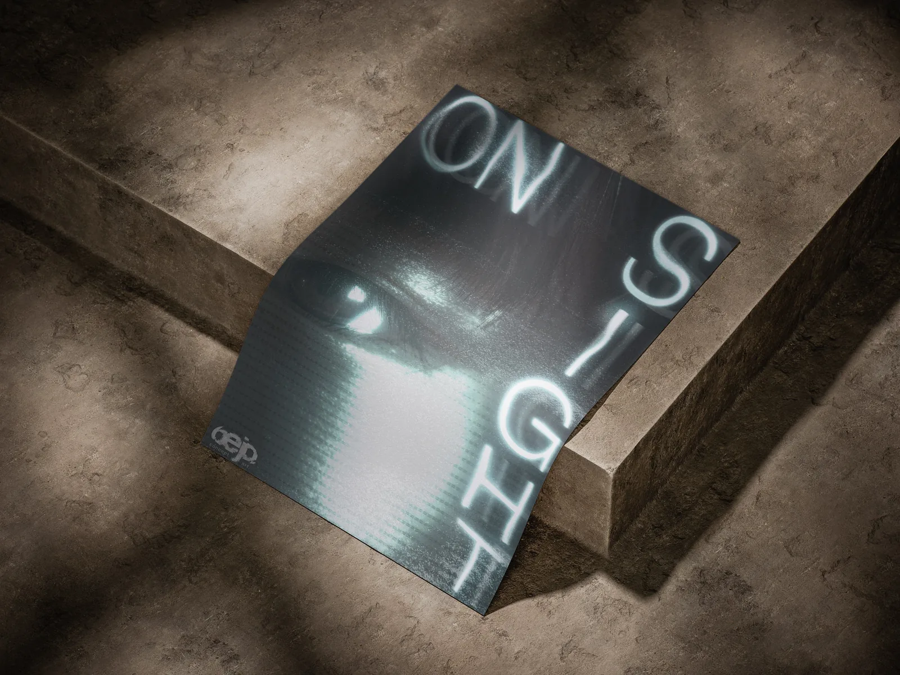
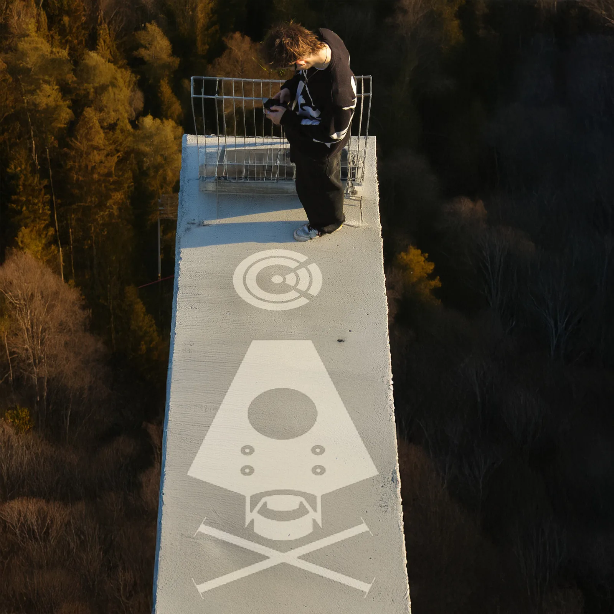
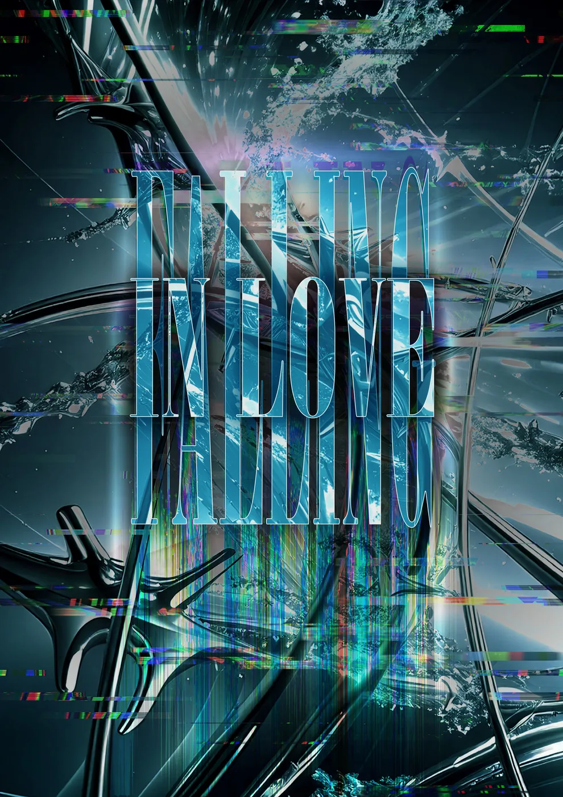
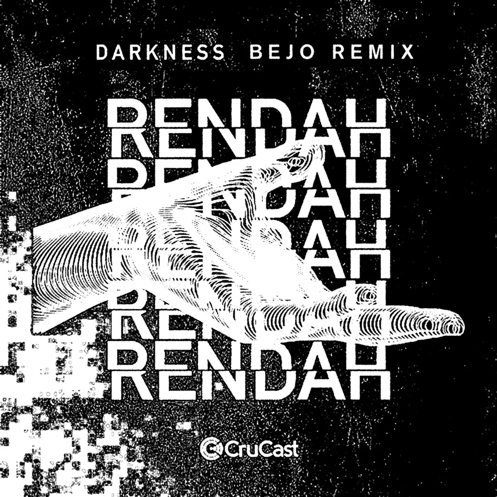
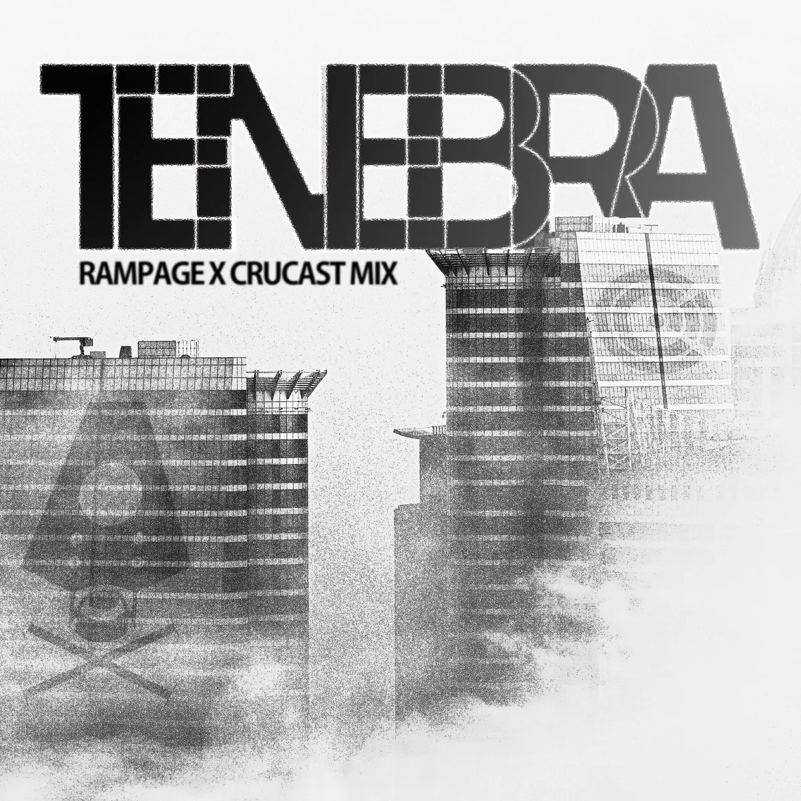
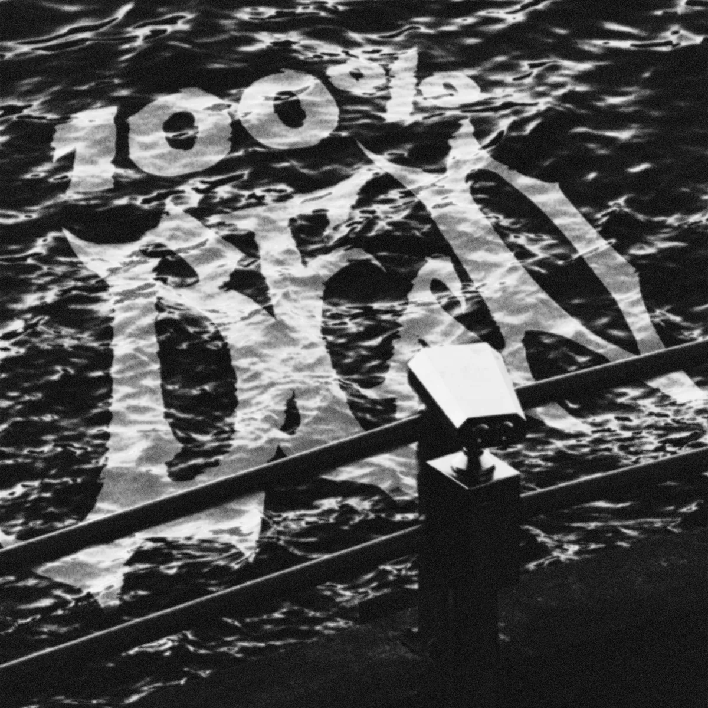
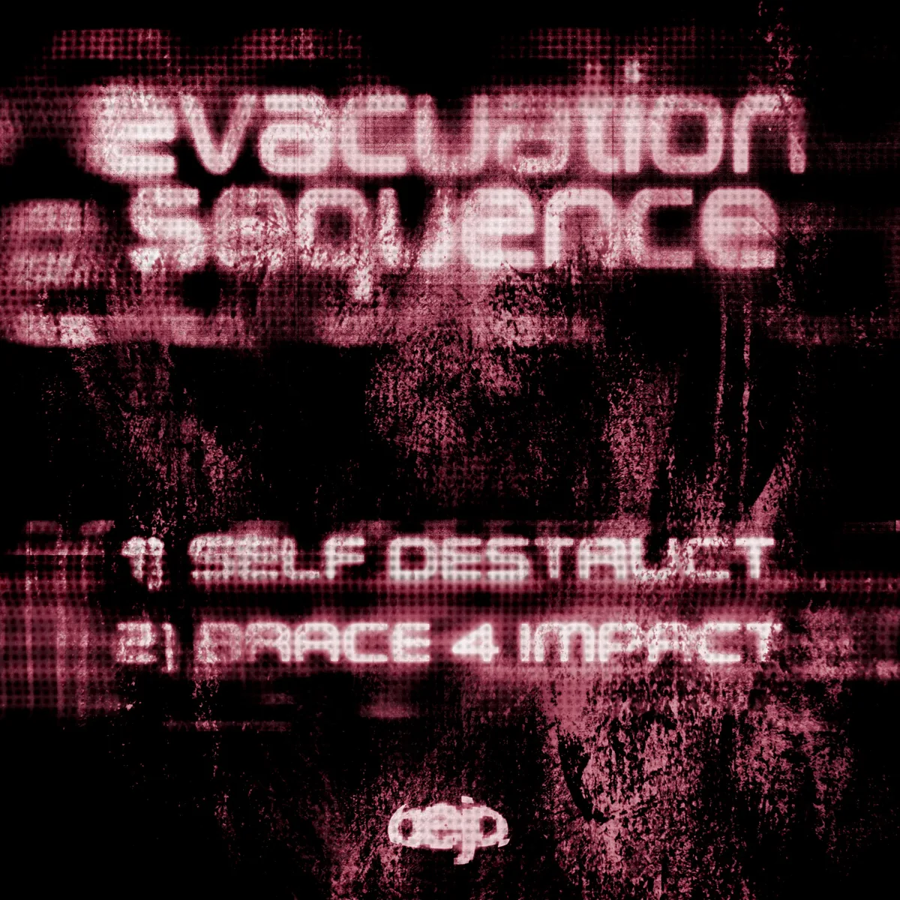
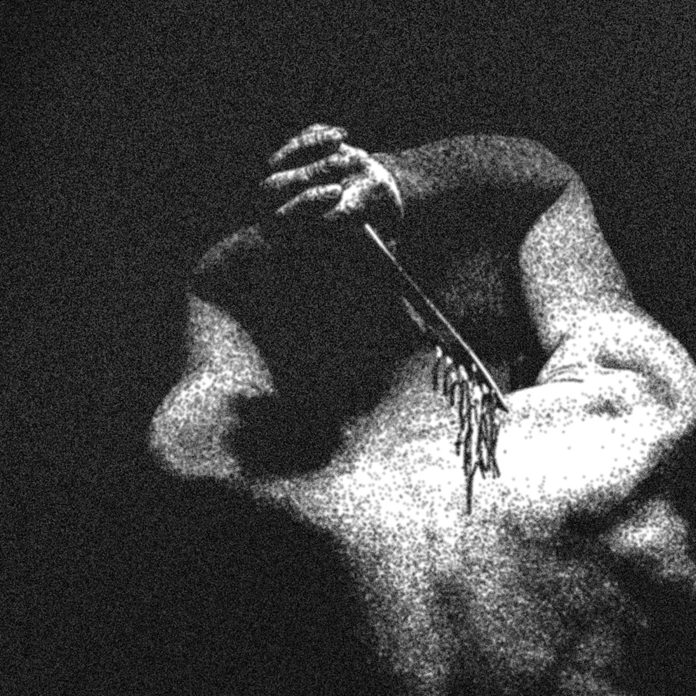

Graphic Design
commissies
Vaardigheden
- Graphic Design (Adobe Suite)
- AI Prompting (Firefly, Midjourney)


Als ZZP'er ontwerp ik grafisch werk in opdracht voor artiesten. Van albumcovers tot logo's: ik ontwerp alles wat de klant nodig heeft. Ik heb een persoonlijke, grungy stijl die ik graag gebruik, maar ik werk ook met alle plezier buiten deze stijl om aan de behoeften van de klant te voldoen.
Door een combinatie van de traditionele Adobe-programma's en digitale tools te gebruiken, creëer ik opvallende ontwerpen die de muziek en visie van artiesten perfect weerspiegelen.





